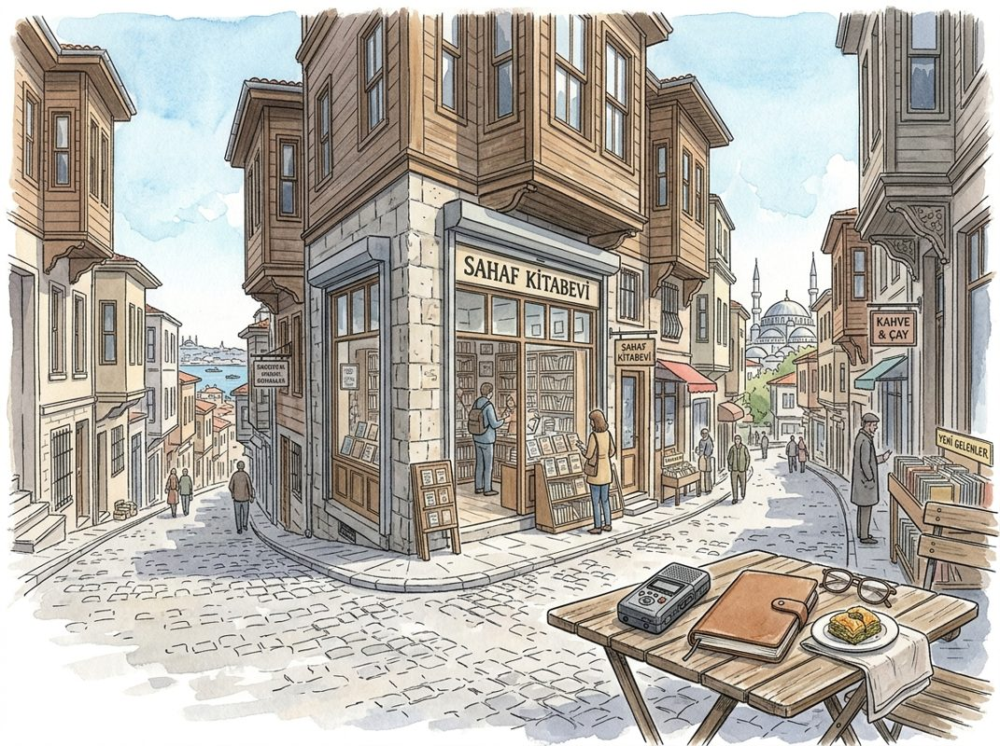

8/29

播客简报 2026-08-29
今日更新
Nvidia's Historic Quarter, SaaS Comeback, Bessent vs Druck, America's Debt Crisis, Cancer Vaccine
来源：All-In with Chamath, Jason, Sacks & Friedberg
状态：已读完整音频 transcript
本期播客深入探讨了当前科技与宏观经济的多个热点，包括英伟达在AI领域的历史性突破与战略布局、Salesforce如何凭借AI整合实现SaaS业务的强劲复苏，以及美国日益严峻的债务危机及其引发的财政政策辩论，揭示了技术进步与财政稳定之间错综复杂的关联。这期节目适合关注科技前沿、宏观经济趋势以及对美国政策制定有兴趣的中文读者。
- 科学界的停滞与异见者的困境：播客开篇讨论了美国科学界存在的深层问题，主持人David Friedberg通过采访Eric Weinstein和Kratsios，揭示了主流科学界对“异见者”的排斥现象。Eric Weinstein是一位批判弦理论等主流物理学理论的科学家，他认为这些理论未经证实却被奉为圭臬，而提出替代理论的人则被边缘化。这种“羊群效应”导致科学家为了获得研究资金、终身教职和学术认可，不得不遵循主流观点，从而扼杀了异见思维和突破性创新。主持人指出，这与过去科学界鼓励大胆假设、小心求证的精神背道而驰，导致科学发展陷入了渐进主义的泥潭，而非颠覆性的发现。例如，当年爱因斯坦的广义相对论即便“离经叛道”也得到了认真研究，而如今任何过于超前的想法都可能被迅速否定和排斥。这种体制性的僵化，被认为是美国科学创新停滞不前的重要原因。
- AI乐观主义：中美对比与机器人进展：在AI领域，播客对比了中美两国截然不同的乐观情绪。主持人Jason Calacanis提到中国举办的“机器人奥运会”，并称赞中共在宣传AI方面的“高明公关”，成功让大量民众为AI和机器人欢呼。数据显示，超过80%的中国民众认为AI利大于弊，而美国这一比例仅为30%。这种悲观情绪被认为是美国在AI竞赛中面临的最大风险。同时，播客也提及了Elon Musk的Optimus机器人正在取得“惊人进展”，尽管尚未公开展示，但其在处理复杂、非预设任务方面的能力已令人印象深刻。此外，Sacks分享了他使用Grokbot的体验，强调了AI代理（agent）的巨大潜力。他认为，未来的AI代理将能够形成“代理群”（agent swarm），协同完成任务，并且通过引入“多人模式”，让人类与AI代理共同协作，将极大地提升其病毒式传播和应用价值。这些讨论凸显了AI技术在实际应用中从模型到智能代理的演进，以及其在物理世界中互动所面临的挑战。
- 英伟达的里程碑式财报与AI生态战略：英伟达（Nvidia）公布了创纪录的季度财报，营收达到962亿美元，同比增长106%，净利润高达600亿美元，成为历史上核心业务季度利润最高的上市公司。公司对下一财年的增长指引高达70%，远超华尔街预期的45%，这有力地驳斥了“AI资本支出泡沫”的论调，表明AI繁荣具有“真实的生命力”并将持续下去。英伟达股价因此上涨9%，市值逼近5.5万亿美元，巩固了其全球最有价值公司的地位。Chamath Palihapitiya指出，英伟达CEO黄仁勋正在积极布局开源生态，通过收购Hugging Face（120亿美元）和Poolside（60亿美元）等公司，旨在掌控开源AI模型的发布和分发渠道。此举被解读为对Sam Altman与AMD合作开发自研芯片的回应，英伟达正加速构建从芯片、模型、云服务到数据中心的“全栈”AI生态系统。这种战略预示着未来科技巨头之间的竞争将不再局限于单一领域，而是走向全面的融合与竞争，客户与供应商的界限将日益模糊，所有大公司都可能拥有自己的云、模型、芯片和数据中心，最终比拼的是谁能提供更优越的整体解决方案。
- SaaS的复苏与Salesforce的AI转型：Salesforce也公布了强劲的季度财报，营收增长11%，调整后每股收益超出预期80%，股价因此上涨超过20%。Chamath借此机会庆祝了他之前关于高端SaaS市场被“超卖”的判断。他认为，“SaaS末日论”被过度夸大，特别是对于Salesforce这类提供核心“记录系统”（systems of record）的横向平台而言。David Friedberg分享了自己公司尝试自建CRM的经历，最终发现将时间和精力投入到核心业务（如植物育种软件）的独特价值创造上，远比重新开发Slack、Gmail或Salesforce等通用工具更具投资回报率。Sacks补充说，企业更倾向于选择经过多年调试、具备合规性和稳定性的专业SaaS软件，而非DIY解决方案。Salesforce CEO Marc Benioff的策略是积极拥抱AI，与Anthropic等模型深度集成，甚至允许AI代理作为用户界面，访问Salesforce中的数据和工作流。这种做法虽然存在客户关系被“中介化”的风险，但Benioff认为AI代理能够作为“超级用户”，发现并利用Salesforce中“被困住的价值”，从而提升用户体验和平台价值。未来的SaaS产品将更注重提供优秀的API和命令行接口（CLI），以适应AI代理的交互需求，而非仅仅是用户界面。这表明，SaaS公司若能正确地定位并融入AI浪潮，将迎来新的增长机遇，而非被淘汰。
- 美国债务危机：耶伦与德鲁肯米勒的交锋：美国财政部面临严峻的债务危机，30年期国债收益率飙升至19年来的新高（5.3%）。财政部长耶伦试图通过增加长期债券回购来压低收益率，但她的前导师、传奇投资者Stan Druckenmiller在《华尔街日报》撰文批评，认为耶伦此举是治标不治本，未能解决美国财政支出过度的根本问题。美国国债总额已达40万亿美元，每年新增约2.5万亿美元，平均每五个月就增加一万亿美元。David Friedberg指出，美国政府的平均借贷成本已达3.4%，而每增加1%的利率，每年将额外支付相当于GDP 1.25%的利息。更令人担忧的是，未来12个月内，美国政府需要为10万亿美元的到期债务进行再融资，这将进一步推高借贷成本和财政赤字。Druckenmiller的批评被解读为在为耶伦提供“掩护”，将解决债务问题的责任明确指向国会和总统，而非财政部长的短期市场干预。Chamath强调，国会两党在控制预算赤字方面都表现无能，债务增速（7%）远超GDP增速（2-4%），这预示着一场财政灾难。他警告称，如果30年期国债收益率达到6%，将是“死亡螺旋”的开始，带来多年的经济痛苦，唯一的解决方案是国会采取行动削减开支，包括削减福利支出。然而，削减开支在政治上极具毒性，没有任何政治家愿意触碰这一敏感议题。
历史精选
Renaissance Technologies
来源：Acquired
原链接：https://www.acquired.fm/episodes/renaissance-technologies
状态：已读网页 transcript
这期播客深入剖析了文艺复兴科技（RenTech）的非凡崛起，揭示了其创始人吉姆·西蒙斯如何将数学天赋、密码破译经验与独特的量化策略相结合，创造出史上表现最佳的投资公司，适合对量化投资、金融史、以及顶尖人才如何跨界创新感兴趣的读者。
- 吉姆·西蒙斯的早期人生与数学天赋：吉姆·西蒙斯（Jim Simons）1938年出生于马萨诸塞州，从小展现出对数学的浓厚兴趣，四岁时便思考芝诺悖论。他在麻省理工学院（MIT）三年完成本科学业，一年获得硕士学位。尽管天赋异禀，西蒙斯在研究生研讨课上意识到自己并非最顶尖的数学天才，但他拥有独特的“品味”，善于识别有价值的科学问题。这种自我认知促使他寻求将不同技能结合。毕业后，他曾与朋友骑摩托车远赴波哥大冒险，展现出不安现状的冒险精神。在加州伯克利攻读博士期间，他用5000美元的结婚礼金尝试交易，虽初期获利50%但很快亏光，这让他认识到市场交易的复杂性。此后，他短暂任教于MIT和哈佛，但很快因厌倦学术界的束缚和对财富的渴望而寻求新的挑战。
- 冷战密码破译与量化投资的萌芽：1964年，西蒙斯加入普林斯顿的国防分析研究所（IDA），一个为美国政府（特别是NSA）提供咨询的非营利组织，从事冷战时期的密码破译工作。IDA的独特文化允许研究人员一半时间从事密码破译，一半时间自由研究。西蒙斯在此期间发现，密码破译（从噪音中提取信号）与预测市场行为有异曲同工之妙。他与同事（包括马尔可夫模型专家莱尼·鲍姆Lenny Baum）合作，撰写了《股票市场行为的概率模型与预测》论文，这成为文艺复兴科技量化策略的早期蓝图。然而，由于当时量化投资概念尚未普及，且他们缺乏资本和金融背景，首次募资尝试以失败告终。西蒙斯因公开反对越南战争而被IDA解雇，职业生涯一度受挫，最终接受了纽约州立大学石溪分校数学系主任的职位，并在此组建了一支世界顶尖的数学团队。
- Moneymetrics的创立与文艺复兴科技的诞生：1978年，西蒙斯在哥伦比亚地板砖公司的股份被收购后获得一笔资金，他决定离开学术界，在石溪分校附近创立了自己的交易公司Moneymetrics。他邀请了前IDA同事莱尼·鲍姆和明星代数家詹姆斯·阿克斯（James Ax）加入。初期，他们主要交易货币和商品期货，但交易决策仍依赖于人工判断和基本面分析，计算机模型仅提供辅助信号。西蒙斯本人也并未完全信任模型，将部分财富分散投资。1982年，西蒙斯与早期互联网先驱、宾夕法尼亚大学教授霍华德·摩根（Howard Morgan）共同创立了文艺复兴科技（Renaissance Technologies）。公司初期采取多元化策略，50%投资于量化交易，50%投资于私人科技公司（风险投资）。然而，量化交易部门遭遇挫折，鲍姆因一笔政府债券的巨额亏损导致组合价值下跌40%，最终离开了公司。此后，文艺复兴科技一度几乎完全专注于风险投资，富兰克林电子词典是其重要投资之一。
- Axcom的独立与Medallion基金的崛起：在量化交易部门遭遇困境后，詹姆斯·阿克斯和桑多尔·斯特劳斯（Sandor Straus，一位专注于数据基础设施的石溪校友）决定前往加州成立Axcom公司，继续发展量化交易策略。西蒙斯与他们达成协议，持有Axcom四分之一的股份，并将其作为文艺复兴科技的外部交易经理。在加州，斯特劳斯开始痴迷于收集和清洗历史交易数据，包括早至19世纪的盘中高频数据（tick data），这在当时是前所未有的。同时，西蒙斯引荐了伯克利教授埃尔温·伯利坎普（Elwyn Berlekamp），他曾与约翰·纳什和克劳德·香农共事，并精通凯利准则（Kelly Criterion）的头寸管理。数据、模型和科学的头寸管理相结合，使得Axcom的量化模型开始展现出惊人的效果，年化回报率超过20%。
- Medallion基金的成功秘诀与挑战：1988年，霍华德·摩根将风险投资业务剥离（后发展为First Round Capital，西蒙斯是其重要LP），西蒙斯与Axcom合作成立了以他们所获数学奖项命名的Medallion基金。尽管初期有所波动，但伯利坎普坚信模型的潜力，买断了阿克斯的股份，并提出了“更高频率交易”的关键策略。他认为，如果模型能以微弱优势（如50.75%的胜率）预测市场，那么通过大量小额交易和动态调整头寸（凯利准则），就能累积巨额利润。这一策略在1990年取得了惊人的成功，Medallion基金在管理2700万美元资金的情况下，实现了77.8%的毛收益，扣除5%的管理费和20-25%的业绩提成后，净收益仍高达55%。然而，高频交易也面临实际挑战，如交易成本和市场滑点（大额交易会影响市场价格），这些因素限制了交易规模和速度。
Patek Philippe: Watch Perfection - [Business Breakdowns, REPLAY]
来源：Business Breakdowns
原链接：https://joincolossus.com/episodes/66474272/reardon-patek-philippe-watch-perfection
状态：已读网页 transcript
这期播客深入剖析了百达翡丽（Patek Philippe）如何通过极致的工艺、独特的品牌叙事、对二级市场的精妙掌控以及坚守家族独立性，成为全球顶级奢侈品腕表制造商的典范。它适合所有对奢侈品牌建设、长期商业战略、收藏品市场以及家族企业传承感兴趣的中文读者。
- 百达翡丽：超越时间的完美制表商：本期播客邀请了古董百达翡丽专家、Collectability创始人约翰·里尔登（John Reardon），深入探讨了百达翡丽（Patek Philippe）作为世界顶级制表商的独特魅力。其标志性的营销口号“你从不真正拥有一枚百达翡丽，你只是为下一代保管它”完美诠释了品牌的精髓——传承与永恒。与劳力士（Rolex）的量产和实用性不同，百达翡丽更注重手工技艺、稀缺性和艺术价值，其近200年的历史、无数专利（如自动上链机制）以及对传统工艺的坚守（如保留链匠）共同铸就了其无与伦比的地位。里尔登曾任职于苏富比，并在百达翡丽工作十年，对品牌有着深刻的理解。
- 近两世纪的匠心传承与技术革新：百达翡丽的卓越源于其对极致工艺和技术创新的不懈追求。品牌拥有近两百年的悠久历史，期间积累了大量专利，许多技术革新至今仍影响着整个制表行业。播客中特别提到了亨利·格雷夫斯（Henry Graves）这位传奇收藏家，他曾委托百达翡丽制作出多款复杂功能腕表，这些作品不仅代表了当时制表技术的巅峰，也极大地提升了品牌的声誉和收藏价值。百达翡丽的生产过程高度依赖手工技艺，产量极低，每一枚腕表都倾注了大量时间和匠人的心血，这与现代工业化生产模式形成鲜明对比，确保了其产品的独特性和稀缺性。
- 1989年拍卖：奠定品牌价值的里程碑：1989年的一场拍卖会对百达翡丽的品牌发展具有里程碑式的意义。这场拍卖会不仅吸引了全球顶级的收藏家和高净值人士，更以惊人的成交价确立了百达翡丽在二级市场的至高地位。它向世界展示了百达翡丽腕表不仅是计时工具，更是具有极高投资和收藏价值的艺术品。这场事件极大地提升了品牌的知名度和声望，为后续的营销策略奠定了坚实基础，也让更多人认识到百达翡丽腕表所蕴含的稀缺性、历史价值和工艺精髓，使其成为收藏界追捧的焦点。
- “为下一代保管”：营销与品牌叙事：百达翡丽在1990年代推出的“你从不真正拥有一枚百达翡丽，你只是为下一代保管它”的营销活动，被誉为史上最成功的奢侈品营销案例之一。这一口号精准地抓住了品牌的核心价值——传承、永恒和家族遗产。它将腕表从单纯的奢侈品提升为一种跨越代际的情感纽带和身份象征，赋予了产品深远的文化和情感意义。这种独特的品牌叙事策略，不仅吸引了那些追求品质和传承的富裕阶层，也成功地将百达翡丽与永恒的价值和家族荣誉紧密联系起来，使其在消费者心中占据了不可替代的地位。
- 掌控二级市场：独特的品牌生态维护：百达翡丽对二级市场的态度和策略是其成功的重要因素。与许多品牌试图控制或忽视二级市场不同，百达翡丽积极参与其中，通过在拍卖会上委托出售或回购自家腕表，来影响和维护其产品的市场价值。这种策略确保了品牌对历史作品的掌控力，也向市场传递了其产品保值增值的信心。百达翡丽深知二级市场的表现会直接影响新产品的吸引力，因此，通过精妙的干预，它不仅维护了品牌声誉，也为新产品的营销提供了有力支撑，形成了一个良性循环的品牌生态系统。